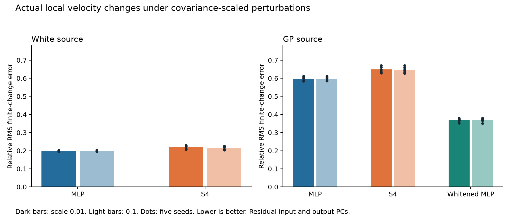

The 25 original checkpoints were evaluated without retraining. For each source, all heads share 256 histories, five interpolation times, four random directions per history, and two displacement scales. Directions lie in velocity PCs 3–16 and are scaled by their conditional input covariance. The reference is the nonlinear conditional velocity given the full normalized history.

The finite-change results reproduce the covariance-weighted derivative ranking: for a GP source, whitened MLP has the smallest error, followed by raw MLP and S4. This differs from the unweighted Jacobian ranking, where S4 was closer than raw MLP. The conclusion depends on the geometry of the perturbations, not solely on whether a derivative or a finite difference is measured.
| Source | Head | Scale | Relative error | Absolute RMS error | Reference RMS |
|---|---|---|---|---|---|
| white | mlp | 0.01 | 0.1988 | 0.002212 | 0.010354 |
| white | mlp | 0.1 | 0.1989 | 0.022133 | 0.103536 |
| white | s4 | 0.01 | 0.2195 | 0.002415 | 0.010354 |
| white | s4 | 0.1 | 0.2160 | 0.023802 | 0.103536 |
| gp | mlp | 0.01 | 0.5965 | 0.001585 | 0.002368 |
| gp | mlp | 0.1 | 0.5968 | 0.015837 | 0.023661 |
| gp | s4 | 0.01 | 0.6485 | 0.001678 | 0.002368 |
| gp | s4 | 0.1 | 0.6477 | 0.016747 | 0.023661 |
| gp | whitened_mlp | 0.01 | 0.3684 | 0.000922 | 0.002368 |
| gp | whitened_mlp | 0.1 | 0.3684 | 0.009203 | 0.023661 |
Each table entry averages the per-time, per-seed statistic. In particular, mean relative errors are averages of error/reference ratios, not ratios of the two displayed means. Every underlying numerator and denominator is saved in results.json.
All 250 finite-change metric rows were independently recalculated from saved arrays; all frozen source and checkpoint hashes remained unchanged. Increasing quadrature from 64 to 128 changes finite velocity differences by at most 1.94 × 10⁻¹² relative RMS. The oracle's linearization error is at most 0.13% at scale 0.01 and 1.29% at scale 0.1. The original models are evaluated in float32; numerical rounding is small at these selected scales but these probes are not a zero-step derivative limit.
This is an explicitly post-hoc geometric sensitivity check. Covariance-scaled directions and their Mahalanobis radii do not certify likelihood or distributional support for a Student-t mixture. These results do not establish why optimization succeeds or fails, and they do not replace held-out forecast evaluation.